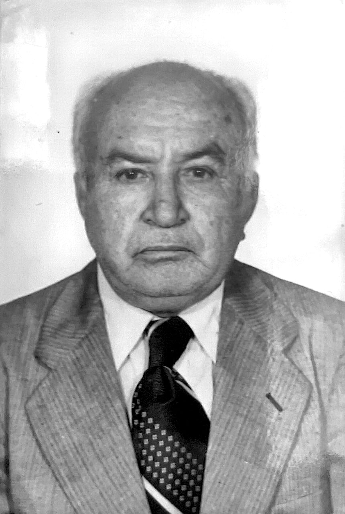

Memória · Depoimento
Desde 1964
A história da Assembleia de Deus de Vila de Cava, contada pelo pastor presidente Luiz Paes Leme, o homem que a viu nascer na sala de uma casa e a conduziu por quatro décadas.
Depoimento gravado na própria igreja, em entrevista conduzida por membros da ADVIC.

O começo
“A igreja surgiu por vontade de Deus”
A igreja surgiu por vontade de Deus. Não existia nenhum pensamento de se abrir uma igreja em Vila de Cava. Eu acho até que, porque meu saudoso sogro fez aquela declaração de que não me apoiaria, Deus observou isso.
Depois que fui separado a diácono e comecei a trabalhar na Igreja do Sinal, houve lá um movimento estranho: o pastor presidente resolveu tirar o pastor João da direção da igreja. Naquele tempo, ele ainda era presbítero. A igreja não aceitou. Ele também não aceitou. Criou-se uma situação difícil, e começou a haver descontentamento do povo.
O irmão João foi ameaçado: se não saísse para outro lugar, a igreja o estaria excluindo. Então foi aconselhado a tirar a carta para outra igreja, para não ser excluído. Já que o caminho seria esse, ele optou por tirar a carta, e a tirou para Jaceruba. Com ele, saíram 32 irmãos.
Esses 32 irmãos não tinham como ir até Jaceruba para assistir aos cultos. Então ele abriu o trabalho na casa dele, justamente naquele lugarzinho onde disseram que não me apoiariam. E assim começou a igreja em Vila de Cava. Ela deu início assim.
1964
O primeiro culto acontece na casa do pastor João Bezerra, em novembro.
Os fundadores
Trinta e dois irmãos e uma casa
O primeiro culto foi na casa do saudoso pastor João Bezerra. Ali se deu o primeiro culto, mais ou menos em novembro de 1964. E, a partir dali, quem nos deu apoio foi a Assembleia de Deus de Jaceruba, porque o pastor João levou a carta para lá, e as 32 pessoas também levaram. O pastor Roldão, meu pai, foi quem nos deu cobertura.
A igreja começou com o pastor Roldão, com o saudoso pastor João Bezerra e com esses 32 membros que vieram com carta de mudança. Para falar nominalmente de cada um, me lembro de alguns:
- Pastor Manuel de Jesus e família
- Irmã Noemi Gouveia
- Irmã Maria Gouveia mãe de Noemi
- Irmão Natã
- Irmão Valdemiro
- Irmã Júlia Rosa
- Irmã Bibiana
- Irmã Emília
São muitos, são 32. No momento, não me lembro do nome de todos. Mas esses foram os fundadores da igreja.
1968
A emancipação: a ADVIC passa a ter vida própria.
A emancipação
De igreja-filha a igreja-mãe
A emancipação da igreja se deu no ano de 1968. De 1965 a 1968, a igreja de Jaceruba construiu o primeiro templo aqui e organizou a igreja. A igreja cresceu e passou a ter condições de vida própria. Aí, no ano de 68, foi realmente dada a emancipação, quando o pastor Roldão e o pastor João Bezerra assinaram.
1964 a 1984
Vinte anos servindo ao lado
Comecei o meu ministério na Igreja do Sinal, como Deus me mandou. Dali para cá, funcionei como diácono por quatro anos e como presbítero por dez anos. No ano de 1978, fui ordenado pastor.
Trabalhei como pastor auxiliar por seis anos ao lado do pastor João Bezerra, e fiz de tudo. Fui secretário, fui tesoureiro, fui dirigente do grupo de louvor. O meu trabalho nesse período foi assim.
1985
Com o falecimento do pastor João Bezerra, o pastor Luiz assume a presidência.
O peso da liderança
“Senti realmente muito pesado”
Nessa época, as coisas ficaram um pouco difíceis para mim, porque eu trabalhava ao lado de um líder, então a responsabilidade maior era dele. Eu fazia tudo, inclusive em liderança, e era responsável pelo que fazia na igreja, mas o peso sempre era do pastor presidente.
Quando assumi para ser o pastor presidente, aí sim eu senti realmente muito pesado, muito difícil. Mas entendia que Deus tinha me chamado.
Eu iria trabalhar como realmente o Senhor me orientasse, seguindo as normas como já tinha aprendido.
O chamado
A igreja que decidiu sair
A igreja já era bem estruturada, mas havia uma coisa que nós não fazíamos aqui: a obra de missões. Como eu sempre senti o desejo de fazer obra missionária, implantamos aqui a secretaria de missões e começamos a sair, a abrir outras igrejas.
Começamos em Adrianópolis, Mata do General, Bangu e São João de Meriti. Por fim, chegamos a Dores de Macabu, a Mimoso do Sul, a Santana de Serecita. Cheguei até na Bahia também, e lá fizemos um grande trabalho.
Hoje, todas essas igrejas existem. Todas emancipadas e crescentes, abençoadas. Trabalhos confirmados pelo Senhor.
Como alcançar todas as criaturas se eu ficar parado dentro de um local só, num salão, estacionado? A ordem de Jesus é ir por todo o mundo.
Eu entendo que a missão da igreja é essa: pregar o evangelho a toda criatura. Senti o desejo de caminhar mais, de ir à frente, e amor pelas almas também. A gente está aqui, e muitas almas já aceitaram a Cristo Jesus conosco, mas a gente pensa nos lugares onde não há o evangelho, onde muitas pessoas estão morrendo sem salvação por falta do evangelho.
Essa era a minha preocupação: ir aonde não tinha o evangelho. E assim eu fiz, e fui muito bem-sucedido.
Uma experiência
O salão de Dores de Macabu
Tem muitas experiências. Se eu for contar aqui, não vai haver tempo. Mas eu me recordo de quando abrimos o trabalho em Dores de Macabu.
Eu não fui porque quis ir: vieram a mim para me chamar e pedir apoio. No caso, foi o irmão Joaquim Otávio.
Ele veio e me pediu apoio, e eu falei: Eu vou lá conhecer o lugar.
Quando cheguei, ele morava num lugar chamado Quilombo. Eu disse: Ó, irmão Joaquim, aqui não dá para a
gente abrir igreja, não, porque aqui já tem uma Assembleia de Deus. Eu não acho justo a gente abrir
outra. Mas, se o senhor quiser, vamos andar, procurar um lugar que não tem igreja, e nós vamos te
apoiar.
E assim fizemos.
Fomos parar em Dores de Macabu. E quando chegamos, na primeira rua em que eu entrei, existia um
salãozinho de telha, uma cobertura. E Deus falou comigo naquele lugar. Não falou com ninguém mais, foi
assim, em pensamento. Deus disse: O lugar é aqui.
Aí eu virei para o irmão Joaquim e disse: Irmão Joaquim, Deus me disse que o lugar é aqui.
E ele
disse: Não, aqui não pode ser, porque isso aqui é um centro.
Eu disse: Tudo bem, mas vamos lá
ver. Vamos conversar com o dono do centro.
E assim entramos. Chegando lá, a conversa foi a mesma que o irmão Joaquim tinha previsto. A responsável
pelo centro disse: Nós não negociamos com crente. Não alugamos, não vendemos, não fazemos negócio com
crente.
E eu fiz o seguinte: agradeci a ela por ter nos recebido e perguntei se ela aceitaria que eu fizesse uma oração. E ela aceitou. Eu fiz a oração e, quando terminei, ela estava chorando. Ao final, me ofereceu um cafezinho. Tomei o café dela, me despedi e fui embora.
Passei o dia todo procurando lugar para alugar, para comprar, e não conseguia. Fomos para a casa do irmão Joaquim, dormimos lá, e de madrugada eu acordei, me coloquei num cantinho da casa onde estávamos e comecei a orar. De repente, todos que estavam conosco perceberam que eu estava orando e foram orar comigo.
Servos, por que vocês estão preocupados com o aluguel do salão? O salão já está alugado. A obra é minha, eu faço como quero.
Nisso eu me preocupei, porque Deus não usou os outros, usou a mim. Mas eu acreditei. Então eu disse
para os irmãos: Irmãos, eu não inventei isso. Deus falou mesmo, e eu creio que o salão já está
alugado. Então vamos levantar, vamos tomar café e vamos procurar onde é esse lugar…
A entrevista continua. Esta é a primeira parte do depoimento do pastor Luiz Paes Leme. Os próximos trechos serão publicados aqui à medida que forem transcritos.